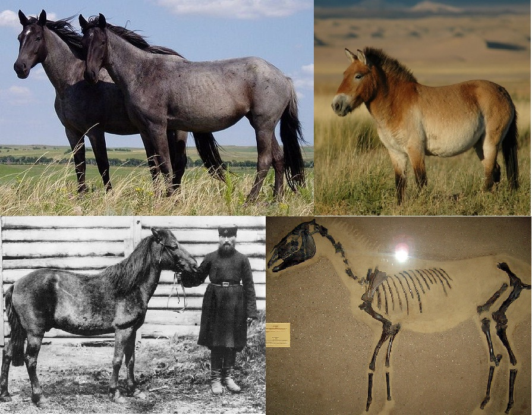

The wild horse (Equus ferus) is a species of the genus Equus, which includes as subspecies the modern domesticated horse (Equus ferus caballus) as well as the endangered Przewalski's horse (Equus ferus przewalskii).[2][3] The European wild horse known as the tarpan that went extinct in the late 1800s has previously been classified as a subspecies of wild horse (Equus ferus ferus), but more recent studies have cast doubt on whether those horses were truly wild or if they actually were feral horses or hybrids.
Przewalski's horse had reached the brink of extinction but was reintroduced successfully into the wild.[5] The tarpan became extinct in the 19th century but is theorized to have been present on the steppes of Eurasia at the time of domestication.[6][7][8][9] However, other subspecies of Equus ferus may have existed and could have been the stock from which domesticated horses are descended.[10] Since the extinction of the tarpan, attempts have been made to reconstruct its phenotype using domestic horses, resulting in horse breeds such as the Heck horse.[11][12] However, the genetic makeup and foundation bloodstock of those breeds is substantially derived from domesticated horses, so these breeds possess domesticated traits.
The term "wild horse" is also used colloquially in reference to free-roaming herds of feral horses, for example the mustang in the United States,[13] and the brumby in Australia.[14] These feral horses are untamed members of the domestic horse subspecies (Equus ferus caballus), not to be confused with the truly "wild" horse subspecies extant into modern times.
Evidence supports E. ferus as having evolved in North America about 1.1 - 1.2 million years ago. Around 800,000 - 900,000 years ago, E. ferus migrated west to Eurasia via the Bering Land Bridge, and south to South America via the Isthmus of Panama as part of the Great American Interchange. By the mid-late Pleistocene, it had an extremely large range across the Americas, Eurasia, and North Africa, across which it was abundant. There have been several fossil horse taxa from throughout this range, such as Equus lambei and Amerhippus, that were formerly considered distinct species, but genetic and morphological analysis supports them as being conspecific with E. ferus.
By the latest Pleistocene or early Holocene, American populations had disappeared as part of the Quaternary extinction event, leaving only the Old World populations. It remained widespread there and was ultimately also domesticated around 3600 B.C., but wild populations continued to decline. The last completely wild populations of the tarpan went extinct in Eastern Europe and the southern parts of Russia around the late 19th century, and the Przewalski's horse of Central Asia became extinct in the wild in 1969. However, over the past few centuries feral horses have been introduced to all continents except Antarctica, and Przewalski's horses have been reintroduced to their former habitats in Mongolia.
The horse family Equidae and the genus Equus evolved in North America during the Pliocene, before the species migrated across Beringia into the Eastern Hemisphere.[26] Studies using ancient DNA, as well as DNA of recent individuals, suggest the presence of two equine species in Late Pleistocene North America, a caballine species, suggested to be conspecific with the wild horse,[27][28] and Haringtonhippus francisci, the "New World stilt-legged horse"; the latter has been taxonomically assigned to various names, and appears to be outside the grouping containing all extant equines.[29] In South America there appear to have been several species of equine, Equus (Amerhippus) neogeus, which had previously thought to represent 5 taxa due to morphological variability,[30] and several species of Hippidion, which also lie outside the group containing all living horses.[31] (It had previously been suggested to have been nested within Equus based on incomplete sequence data
Genetically, the pre-domestication horse, E. f. ferus, and the domesticated horse, E. f. caballus, form a single homogeneous group (clade) and are genetically indistinguishable from each other.[27][32][33][34] The genetic variation within this clade shows only a limited regional variation, with the notable exception of Przewalski's horse.[27][32][33][34] Przewalski's horse has several unique genetic differences that distinguish it from the other subspecies, including 66 instead of 64 chromosomes,[7][35] unique Y-chromosome gene haplotypes,[36] and unique mtDNA haplotypes.[37][38] Besides genetic differences, osteological evidence from across the Eurasian wild horse range, based on cranial and metacarpal differences, indicates the presence of only two subspecies in postglacial times, the tarpan and Przewalski's horse.[
At present, the domesticated and wild horses are considered a single species, with the valid scientific name for the horse species being Equus ferus.[40] The wild tarpan subspecies is E. f. ferus, Przewalski's horse is E. f. przewalskii, and the domesticated horse is E. f. caballus.[41] The rules for the scientific naming of animal species are determined in the International Code of Zoological Nomenclature, which stipulates that the oldest available valid scientific name is used to name the species.[42] Previously, when taxonomists considered domesticated and wild horse two subspecies of the same species, the valid scientific name was Equus caballus Linnaeus 1758,[43] with the subspecies labeled E. c. caballus (domesticated horse), E. c. ferus Boddaert, 1785 (tarpan) and E. c. przewalskii Poliakov, 1881 (Przewalski's horse).[44] However, in 2003, the International Commission on Zoological Nomenclature decided that the scientific names of the wild species have priority over the scientific names of domesticated species, therefore mandating the use of Equus ferus for the horse, independent of the position of the domesticated horse.
Przewalski's horse occupied the eastern Eurasian Steppes, perhaps from the Urals to Mongolia, although the ancient border between tarpan and Przewalski's distributions has not been clearly defined.[46] Przewalski's horse was limited to Dzungaria and western Mongolia in the same period, and became extinct in the wild during the 1960s, but was reintroduced in the late 1980s to two preserves in Mongolia.[47] Although researchers such as Marija Gimbutas theorized that the horses of the Chalcolithic period were Przewalski's, more recent genetic studies indicate that Przewalski's horse is not an ancestor to modern domesticated horses